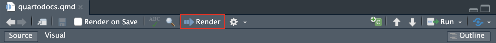
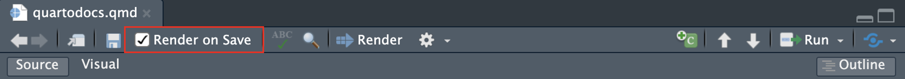

install.packages("rmarkdown")
install.packages("quarto")7 Introduction to Quarto
7.1 Description
Quarto is an open-source new evolution of R Markdown. Quarto supports development in various coding languages and includes publishing and authoring features for individual documents, books, presentations, and websites.
Using Quarto can provide a helpful structure to organize, annotate, and share your scripts. Well-annotated Quarto documents can also promote code literacy as they are easy to read, write, and modify.
Quarto is very well documented. This tutorial will provide an introduction to some basic features, but we recommend that you explore independently. These links below may be a good place to start:
7.1.1 Install R Markdown
To use Quarto with R you will need to install R Markdown with the rmarkdown R package. This will also install knitr which is used for rendering. After installing rmarkdown, install the quarto R package.
7.1.2 Create a Quarto document
For the purposes of this session, we will introduce using Quarto documents using R. You can also create a Quarto project, which knits together multiple Quarto documents, Quarto presentations, Quarto interactive documents, or Quarto websites. Quarto is also supported by different visual editors including Visual Studio Code (VS Code) which we will cover in a later session.
To begin:
- Open RStudio
- Create a new Quarto document. Go to File -> New File -> Quarto Document
- Enter a name and select your preferred output format and engine. Typically we leave Knitr as the default, but you can change this if necessary.

- Save the quarto document to your working directory.
Now we can begin with editing the document itself. The most obvious difference in features from a traditional R script is that a Quarto document incorporates code chunks which separate major segments of code into different chunks. Each chunk can be formatted and run separately as well as part of the full script. We recommend that each chunk performs a specific function that can be annotated.
Sections of code containing one or more code chunks that perform a specific task can also be denoted in an outline with headings.
7.1.3 Set the YAML header
At the top of the Quarto document, you will see a header demarcated by — at the top and bottom. What is a YAML? YAML (“Yet Another Markup Language” or “YAML Ain’t Markup Language,” depending on who you ask) is the metadata that tells R Markdown, Quarto, pandoc, and other software exactly how to process or display the document.
---
title: "Untitled"
format: html
editor: visual
---Edit the YAML header to include relevant information.
---
title: "Introduction to Quarto"
format: html
author: SATVI Computational Group
date: today
---7.1.4 Create a code chunk
You can do this manually by clicking the green chunk icon on the top right of the toolbar or you can use the keyboard shortcut option + cmd + I. This will produce an empty code chunk with R as the default language.
```{r}
#| label: R chunk
print("Hello, Quarto!")
```[1] "Hello, Quarto!"If you want to change the language, simply specify the language you would like to use in the yellow opening delimiter.
```{python}
# This is a Python code chunk
import math
# Calculate the square root of 16
sqrt_16 = math.sqrt(16)
# Print the result
print(f"The square root of 16 is {sqrt_16}")
```The square root of 16 is 4.07.1.5 Tailor the code chunk output
Add options to each code chunk delimiter to show or hide specific information.
warning = FALSE means do not show any warnings generated by the code in the output
message = FALSE means do not show any messages generated by the code in the output
echo = FALSE means do not show the code in the output
```{r}
# Generate a warning
x <- -1
if (x < 0) {
warning("x is negative!")
}
```Warning: x is negative!```{r}
# Generate a message
y <- 10
if (y > 5) {
message("y is greater than 5")
}
```y is greater than 5Hide the warning from the output
```{r, warning = FALSE}
# Generate a warning
x <- -1
if (x < 0) {
warning("x is negative!")
}
# Generate a message
y <- 10
if (y > 5) {
message("y is greater than 5")
}
```y is greater than 5Hide the message from the output
```{r, message = FALSE}
# Generate a warning
x <- -1
if (x < 0) {
warning("x is negative!")
}
```Warning: x is negative!```{r, message = FALSE}
# Generate a message
y <- 10
if (y > 5) {
message("y is greater than 5")
}
```Hide the warning and the message from the output. You can achieve the same effect using Markdown syntax instead of editing the opening delimiter.
```{r}
#| warning: false
#| message: false
# Generate a warning
x <- -1
if (x < 0) {
warning("x is negative!")
}
# Generate a message
y <- 10
if (y > 5) {
message("y is greater than 5")
}
```Hide the code from the output
Warning: x is negative!y is greater than 5More OPML options can be found here.
7.2 View outline
As you build your script with multiple chunks, an outline will be generated which can be viewed alongside your scirpt or hidden.
7.3 Now let’s test a simple script in Quarto
7.3.1 Clear environment
ls()
rm(list=ls())7.3.2 Load libraries
library(knitr) # Needed to embed an external image within a code chunk
library(quarto) # Needed to render Quarto document from R console
library(ggplot2) # Needed to plot data7.3.3 Load dataset
data("esoph")7.3.4 Examine data structure
head(esoph) agegp alcgp tobgp ncases ncontrols
1 25-34 0-39g/day 0-9g/day 0 40
2 25-34 0-39g/day 10-19 0 10
3 25-34 0-39g/day 20-29 0 6
4 25-34 0-39g/day 30+ 0 5
5 25-34 40-79 0-9g/day 0 27
6 25-34 40-79 10-19 0 7summary(esoph) agegp alcgp tobgp ncases ncontrols
25-34:15 0-39g/day:23 0-9g/day:24 Min. : 0.000 Min. : 0.000
35-44:15 40-79 :23 10-19 :24 1st Qu.: 0.000 1st Qu.: 1.000
45-54:16 80-119 :21 20-29 :20 Median : 1.000 Median : 4.000
55-64:16 120+ :21 30+ :20 Mean : 2.273 Mean : 8.807
65-74:15 3rd Qu.: 4.000 3rd Qu.:10.000
75+ :11 Max. :17.000 Max. :60.000 If you want to display your dataframe in a more aesthetic way, you can use the DT R package.
Note - This display option is supported by html. If you want to display tables this way AND render to html and non-html formats, you will also need to install “webshot” or “webshot2” packages that will allow non-html formats to be populated with a snapshot of the table, or include “prefer-html: true” in your YAML front-matter.
library(DT)
# Now just use the datatable function to display your table.
datatable(head(esoph), class = 'cell-border stripe')Find additional datatable display options here.
7.3.5 Plot data
ggplot(data = esoph, aes(x = agegp, y = ncases)) +
geom_point() + # Add points
labs(title = "Esophageal Cancer by Age", x = "Age Group", y = "Number of Cases")
Quarto docs also support the import of image files stored externally. These can be arranged inline with your code or text.
7.4 Import an image
The easiest way to do this is by using R Markdown syntax outside of a code chunk.

If you prefer to import from within a Quarto code chunk, you can do so using knitr
knitr::include_graphics("images/satvi_logo.png")
Documentation on embedding images can be found here.
7.5 Render the document
When you render your document, all code chunks and inline code will be executed automatically. You can render the document with point-and-click, directly from the RStudio console, or from the command line in the Terminal. To render your Quarto document using point-and-click:
1. Render using point-and-click

This will open a preview of your rendered document automatically. You can select the type of preview you prefer using the drop down menu. If you select “Preview in Window,” a separate window with your rendered file will open in your browser. If you select “Preview in Viewer Pane,” a viewer pane will open within RStudio. This viewer pane will automatically update as you edit your code, so it can be helpful to select this option as you modify your documents as it will give you real-time visual updates of changes made.
You can also choose to render on every save by checking the box in the toolbar:

2. Render from the RStudio console
You will need to download and install the Quarto command line interface Quarto CLI. Now type the following directly into the RStudio console.
quarto_render("quartodocs.qmd") # This will render all formats
# You can also render to specific formats
quarto_render("quartodocs.qmd", output_format = "html")
quarto_render("quartodocs.qmd", output_format = "pdf")
quarto_render("quartodocs.qmd", output_format = "docx")3. Render from the command line
Open the Terminal.
quarto render quartodocs.qmd # This will render all formats
# You can also render to specific formats
quarto render quartodocs.qmd --to html
quarto render quartodocs.qmd --to pdf
quarto render quartodocs.qmd --to docxFurther information on rendering can be found here.
7.6 Cheatsheets
Here are 2 helpful cheatsheets for working with Quarto in R:
7.7 Homework
Get familiar with Quarto
- Set up a Quarto document and save to your course working directory.
- Populate the Quarto document with your own code, make sure each chunk and the full script runs without errors.
- Render the Quarto document to html and pdf (docx if you choose).
- Go back to the script and tailor the code chunk options to suit your visual preferences.
- Render the Quarto document again.
- Experiment with other Quarto features. We recommend initializing a Quarto project, which can knit together multiple Quarto documents into a book, website, presentation, or interactive document.
Remember you can always find help using the R package documentation for rmarkdown and quarto. To access the package documentation, type the following:
?rmarkdown
?quartoPrepare for our next session
Instructions for downloads can be found on the installations page.
- If you have not done so already, make an online GitHub account.
- Access the SATVILab GitHub.
- Download and install GitHub Desktop and login with your GitHub account.
SATVI Computational Course - 7 Introduction to Quarto SATVI Computational Course - 7 Introduction to Quarto SATVI Computational Course - 7 Introduction to Quarto SATVI Computational Course